The back-end winner is

Plus de 4,500 personnes ont déjà contribué au code de Ruby on Rails.
by Serguei Cambour
February 2018
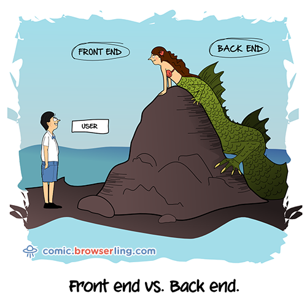
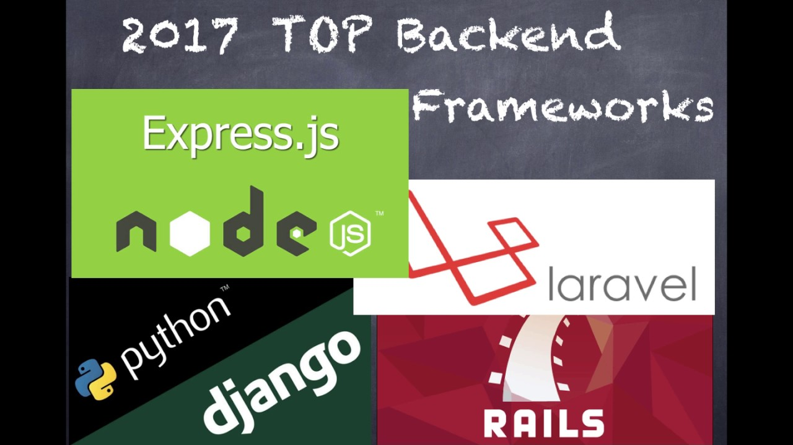
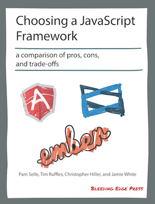
Plus de 4,500 personnes ont déjà contribué au code de Ruby on Rails.

Ruby is simple in appearance, but is very complex inside, just like our human body.
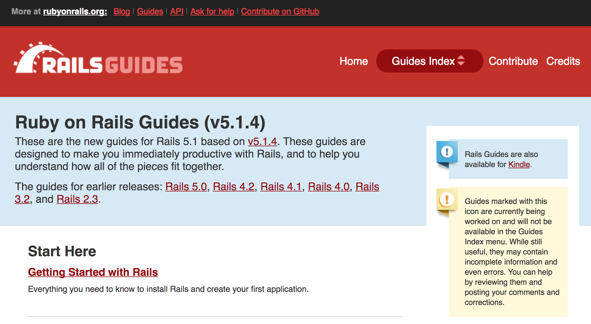
Rails Guides Guides RoR pour dévenir vite productif avec Rails
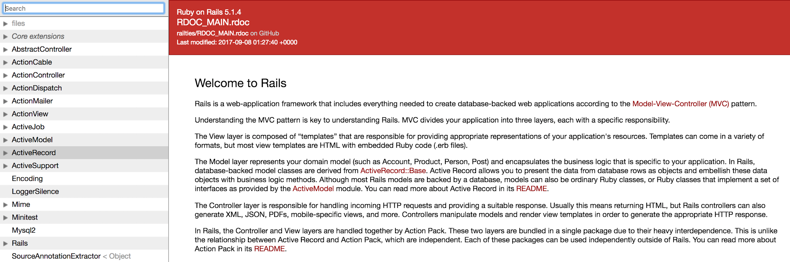
Rails API documentation pour plus d’infos sur modules, classes, méthodes.
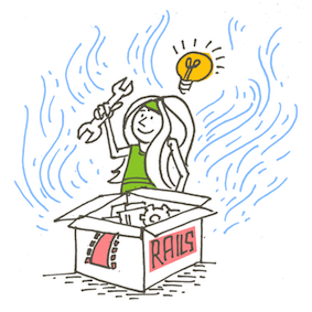
La colonne vertébrale d’une application Rails est le pattern Model-View-Controller qui organize l’application en 3 couches principales:
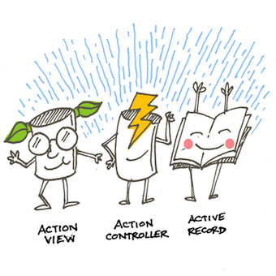
A part ces 3 amigos, Rails est encore livré avec:
Mais il y a encore:
Pas de XML, votre configuration vit dans des fichiers YAML:
# database.yml
default: &default
adapter: postgresql
encoding: unicode
user: postgres
password:
pool: 5
development:
<<: *default
database: decastore_development
test:
<<: *default
database: decastore_test
production:
<<: *default
database: decastore_production
username: decastore
password: <%= ENV['DECASTORE_DATABASE_PASSWORD'] %>
Les paramètres de votre application sont dans le fichier application.yml
# application.yml provided by Figaro gem
development:
oauth_site: 'https://preprod.idpdecathlon.oxylane.com/as/authorization.oauth2'
client_id: 'decastore'
client_secret: '2e53Wu3PLmUqW1CfzStdsJUHM2LltvwFPU6gogDPe5w19eTi5FET6RJCqiHVDh1L'
proxy_url: 'http://gateway.zscaler.net'
proxy_port: '80'
test:
oauth_site: 'https://preprod.idpdecathlon.oxylane.com/as/authorization.oauth2'
client_id: 'decastore'
client_secret: '2e53Wu3PLmUqW1CfzStdsJUHM2LltvwFPU6gogDPe5w19eTi5FET6RJCqiHVDh1L'
proxy_url: 'http://gateway.zscaler.net'
proxy_port: '80'
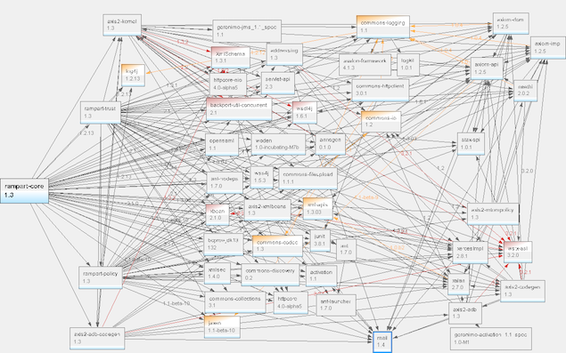
Bundler s’en occupe! Toutes les dépendances sont définiés dans le fichier Gemfile:
# Gemfile
ruby '2.4.0'
gem 'rails', '~> 5.1.4'
gem 'pg', '~> 0.21.0'
gem 'figaro', '~> 1.1.1'
gem 'jwt', '~> 2.1'
gem 'geocoder', '~> 1.4', '>= 1.4.4'
gem 'active_model_serializers', '~> 0.10.6'
gem 'rest-client', '~> 2.0', '>= 2.0.2'
.....
Chaque gem est declaré dans son groupe d’environnement:
# Gemfile
group :development, :test do
gem 'ffaker', '~> 2.1.0'
end
group :test do
gem 'database_cleaner'
end
group :production do
gem 'rails_12factor'
....
end
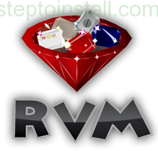
Vous pouvez avoir autant de versions Ruby installées que vous voulez sur votre poste.
Ruby Version Manager (RVM) le détecte via Gemfile automatiquement.
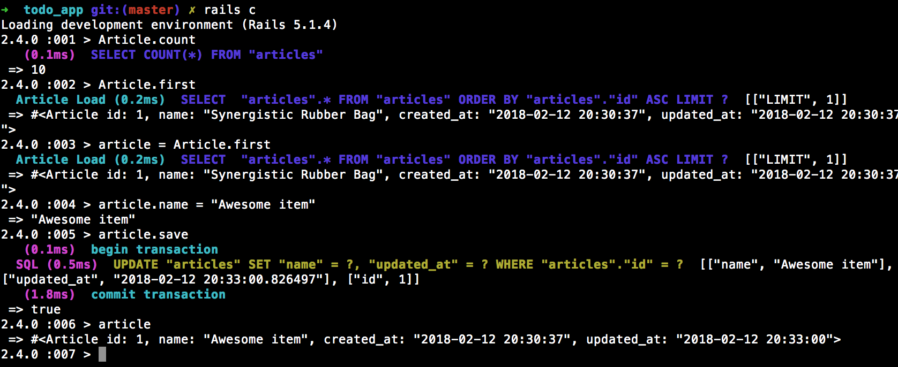
Avec rails c --sandbox toute modification dans la BDD sera annulée à la sortie.
Rails est installé avec son propre serveur d’application - Puma.
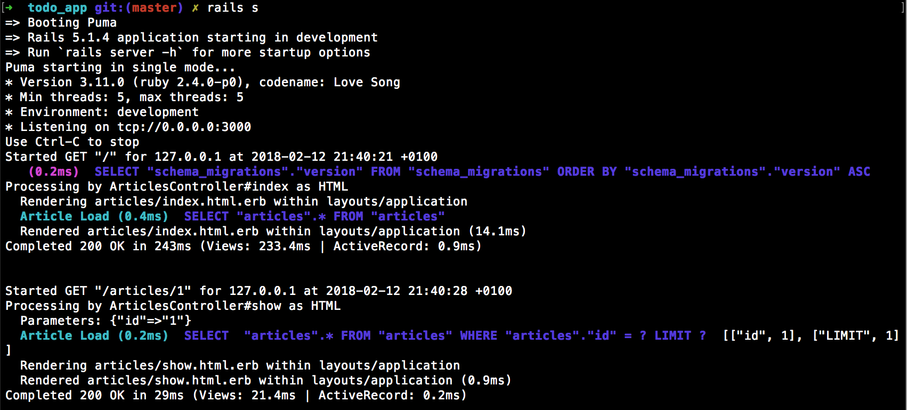
The front-end winner is

A framework for creating ambitious web applications
Il fournit quelques petites libraries JavaScript comme router.js pour routing, rsvp.js pour gérer les promises, backburner pour gérér le cycle d’exécution, et Handlebars pour le rendu de pages HTML.

Utilisé par beaucoup de sites-web comme Discourse, Groupon, LinkedIn, Vine, Live Nation, Nordstrom, Twitch.tv,
Considéré principalement comme framework Web, il est aussi possible de créer des applications Desktop et mobiles.
L’exemple le plus connu d’une app desktop est Apple Music, une fonctionnalité de iTunes.

Un gestionnaire de dépendances rapide, fiable et sécurisé
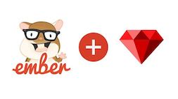
On peut développer une app Ember sans avoir besoin de back-end!

Juste utilisez
add-on EMBER-CLI MIRAGE
Mirage est un outil pour simuler un serveur API. Vous définissez vos route handlers pour répondre aux requests AJAX de votre application.
// mirage/config.js
export default function() {
this.namespace = 'api';
this.get('/authors', () => {
return {
authors: [
{id: 1, name: 'Zelda'},
{id: 2, name: 'Link'},
{id: 3, name: 'Epona'},
]
};
});
}
Utiilisez animations et transitions fournies avec
Liquid Fire dans votre app Ember JS
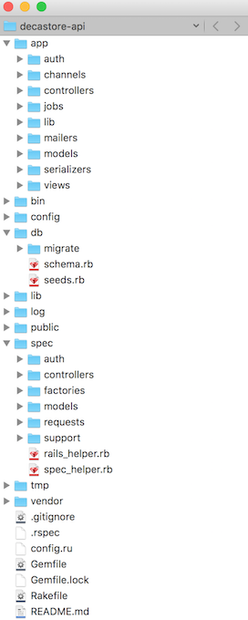
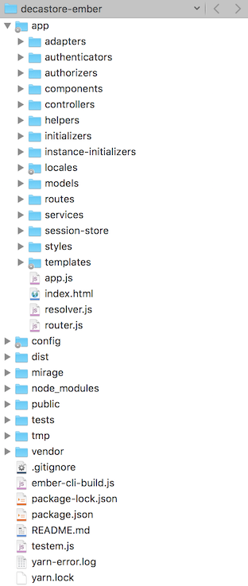
Déçu de Ruby on Rails en back-end ?
Pas de problèmes, - replacer-le avec ce que vous voulez à condition que votre back-end envoie JSON application/vnd.api+json.
et Ember JS ferra son job comme avant.
Ember JS ne vous convient pas non plus ?
Pas trop grave non plus, - choisissez ce que vous aimez et branchez-le avec Ruby on Rails en back-end.
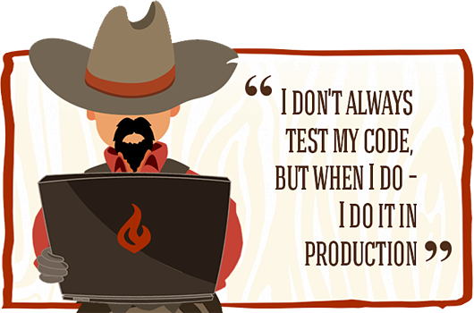
RSpec est choisi pour tester Ruby code et QUnit est un framework de test fourni par défaut avec Ember JS, mais plein d’autres sont disponibles via gems ou add-ons.
RSpec vous permet de créer:
Un exemple de RSpec request test:
RSpec.describe "home page", :type => :request do
it "displays the user's username after successful login" do
user = FactoryGirl.create(:user, :username => "jdoe", :password => "secret")
visit "/login"
fill_in "Username", :with => "jdoe"
fill_in "Password", :with => "secret"
click_button "Log in"
expect(page).to have_selector(".header .username", :text => "jdoe")
end
end
Par défault, lorsque vous créez un nouveau component, helper, service, ou un autre module dans une aplication Ember, Ember CLI va automatiquement créer un fichier de test QUnit basé sur le générateur utilisé:
 Pas de soucis !
Pas de soucis !
Coté Ruby vous pouvez utiliser Byebug gem (default) ou creuser encore plus avec Pry.
Coté Ember il y a aussi excellent
un add-on du navigateur pour vous aider à debugger applications Ember.
Disponible pour Chrome, Firefox ou d’autres navigateurs via bookmarklet.
Si jamaisi vous avez besoin d’utiliser Inspector sur un smartphone, vous pouvez installer un add-on Ember CLI Remote Inspector.
Et comment faire pour le déploiement?
Questions ?